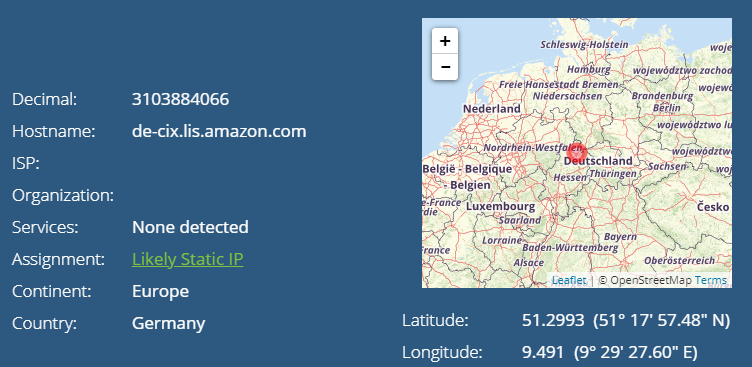
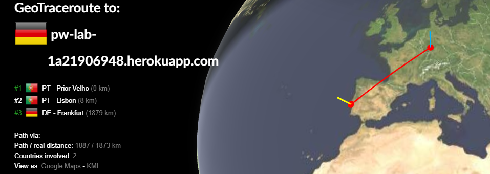
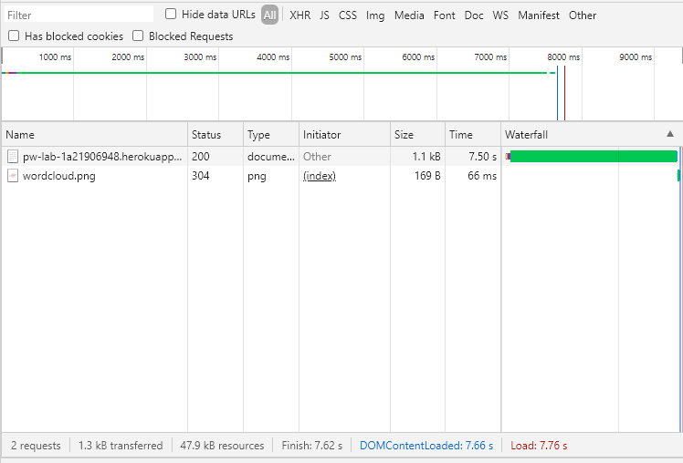

Programação Web
___________________________________________________________________________________
1. Alojamento de página Web na cloud
__________________________________________
Criação de uma página Web
Nesta aula criamos a primeira pagina web.
Primeiro criamos o ficheiro 'index.html'(codigo fonte).
Adicionou-se uma imagem 'wordcloud.png' na pasta img.
Adicionou-se dois ficheiros 'index.php' e 'composer.json' para simular o HTML.
Criação de repositório GitHub
Criou-se um repositorio no git onde foram adicionados os ficheiros anteriomente criados.
Alojamento no Heroku
Criou-se uma conta no Heroku e uma app apartir da ligacao com o repositorio git.
__________________________________________
2. Conhecer a Internet
__________________________________________
Endereços IP
Nesta parte da aula obtivemos informações sobre o IP do meu Pc e o IP da servidor do Heroku
O IP do meu computador é 148.63.83.168.
O IP do meu computador está localizado em Lisboa.

O IP do Servidor Heroku é 185.1.131.34.
O IP do Servidor Heroku está localizado em Frankfurt.

Percurso
GeoTraceRoute :
- PT - Prior Velho (0 km)
- PT - Lisbon (8 km)
- DE - Frankfurt (1879)
Path via :
- Path/real distance -1887/1873 km
- Countries involved: 2

__________________________________________
3. Acesso via HTTP à minha página Web
__________________________________________
HTTP
Fonte da Pagina :

Inspect
Foi inspecionada a network da página:
- Clicando no Hiperlink são descarregados 37 ficheiros.
- Na minha Primeira página foram descarregados apenas 2 ficheiros.
- Ficheiros:
- pw-lab-1a21906948.herokuapp.com do tipo document, com o tamanho 1.1 kB e demorou 7.50 s.
- wordcloud.png do tipo png, com o tamanho 169 B e demorou 66 ms.
- Quando selecionamos cada um dos ficheiros, observa-se :
- Preview : Mostra o elemento selecionado.
- Headers : Informação sobre o pedido.
- Timing : Informações sobre quanto tempo levou cada estágio a carregar.
